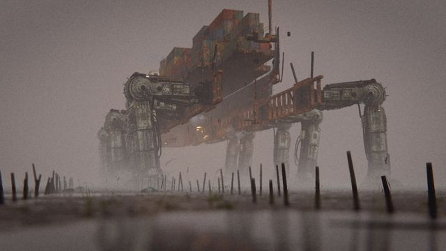
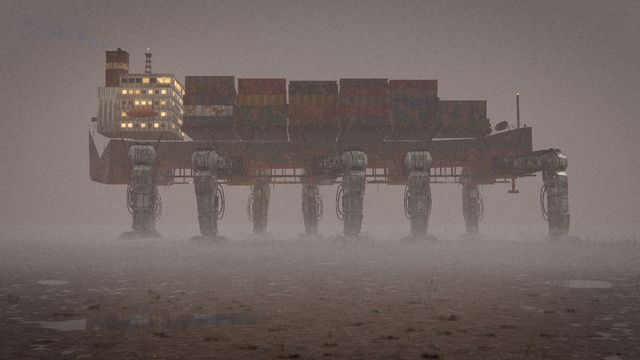
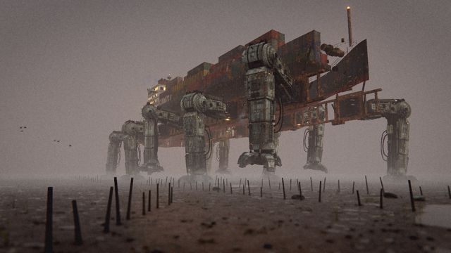
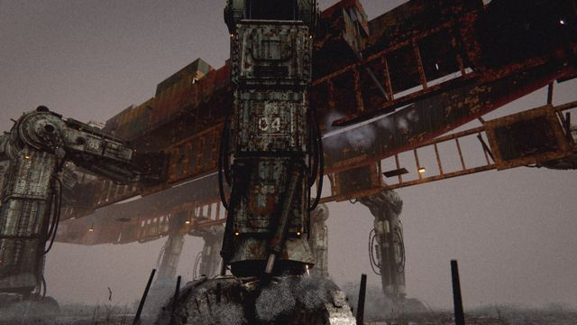
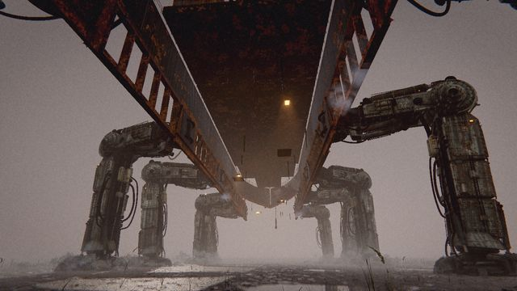
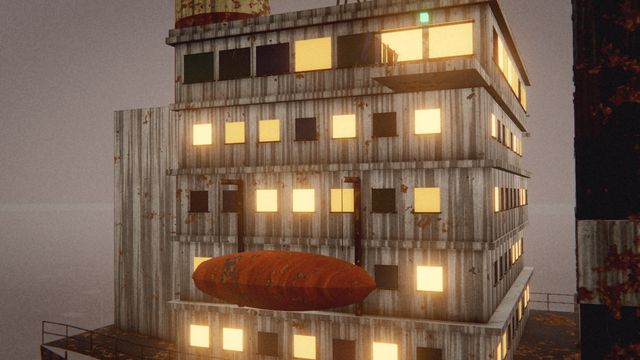
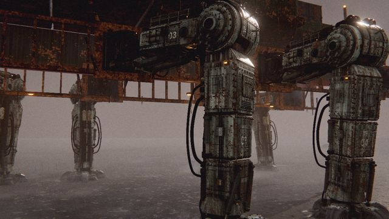
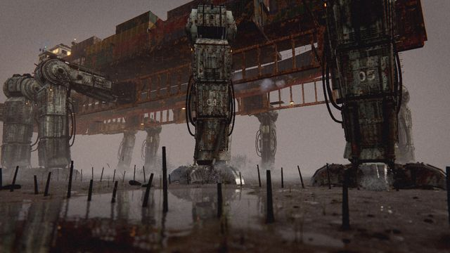
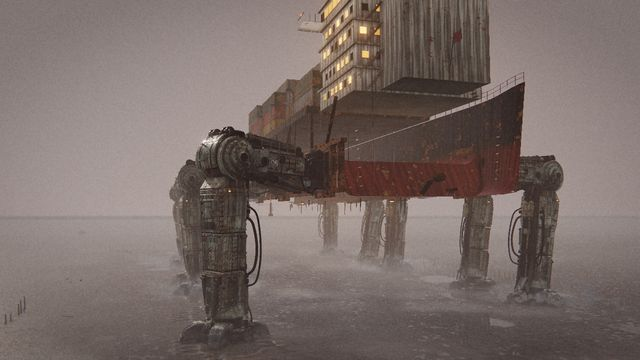

작업 흐름
- 입력
- 주제 하나 (걸어갈 건축물 · 장소 · 시간)
- 브리프
- 실제 크기의 몸체, 사람 크기의 디테일, 다리를 붙일 배 · 거더, 무게에서 나온 보행 수치, 지면 · 시간 · 안개, 아홉 비트의 샷과 소리
- 설계와 검사
colossus.js한 파일의 수치와 몸체 모듈, 다리 도달 · 무릎 각도와 방향 · 디딘 발 고정 · 지지 · 결정성 · 샷마다 노출과 움직임 검사, 발이 닿는 순간에 맞춘 카메라- 출력
- 스틸과 콘택트 시트, 오프라인 렌더 PNG 프레임, 걸음마다 배치한 합성 사운드, 1080p MP4
cp -r walking-colossus /tmp/try && cd /tmp/try/examples/low-tide
node ../../scripts/check.mjs --fast --events # 다리 · 보행 · 지지 · 카메라 + 샷별 발자국
node ../../scripts/shot.mjs --board --n 1 # 스토리보드 shots/s_sheet.jpg
node ../../scripts/render.mjs && node ../../scripts/audio.mjs && node ../../scripts/encode.mjs
node ../../scripts/new-colossus.mjs ~/my-colossus --title "Night Ferry" --legs 4요구 사항: Node 18+, Playwright + Chromium(GPU가 있으면 GPU, 없으면 SwiftShader), ffmpeg. 단계별 순서는 SKILL.md에 있습니다.
샘플
스킬의 엔진으로 렌더한 샷입니다. 위는 원본에 없는 주제로 처음부터 만든 예제, 아래는 원본 영화를 같은 엔진에 옮긴 스타일 예제입니다. 카드를 누르면 그 시점부터 라이브 데모가 재생됩니다.
「Low Tide」 새 주제 · 40초 · 9샷
물이 빠진 갯벌에 남겨진 녹슨 컨테이너선이 다리 열 개로 일어나 흐린 새벽의 갯벌을 건너 바다를 찾아갑니다. 브리프 → 몸체 설계 → 검사 → 스틸 채점으로 만든 예제입니다.

오프닝 · 0–5초안개 속의 무언가물웅덩이 높이의 렌즈, 말뚝에서 배로 초점 이동

옆모습 · 5–10초전체 실루엣170 m 거리의 망원, 다리 열 개가 번갈아 걷는 모습

히어로 · 10–15초낮은 3/4뱃머리 앞 지면 높이에서 다가오는 배

발 · 15–19초물에 내리꽂히는 발18.20초에 3번 다리가 물웅덩이에 착지

선저 · 19–24초머리 위로 지나가는 배작업등, 해초, 물방울, 천천히 도는 프로펠러

생활 · 24–29초거주구의 불빛호박색 창문, 구명정, 브리지 윙의 빨래

기계 · 29–33초무릎과 피스톤착지 뒤 다음 다리가 진흙에서 떨어지는 순간

거울 · 33–37초수면에 비친 배평면 반사, 33.40초에 뒤쪽 발 착지

떠남 · 37–40초바다 쪽 안개 속으로선미 뒤에서 크레인 업, 페이드 아웃
「Walking Block」 원본 영화 · 45초 · 9샷
원본 레포의 건물 · 하부 기계 모듈과 카메라를 스킬의 엔진 위에 그대로 옮긴 스타일 예제입니다. 엔진의 기본 룩이 이 영화의 푸른 황혼입니다.
실제 작품
스킬이 만들어진 원본 프로젝트와, 스킬로 만든 두 예제의 라이브 페이지입니다. 원본 영화(1080p 45초 MP4)는 원본 레포의 릴리스에 있습니다.
링크
- SKILL.md 워크플로
- 폴더 engine · scripts · templates · examples · references
- README.md 빠른 시작
- references/BRIEF.md 주제 → 브리프, 스틸 채점 기준
- references/MODULES.md colossus.js와 모듈 계약, 모든 옵션
- references/GAIT.md 무게 → 보행 수치, 움직임 검사
- references/LOOK.md 후처리, 룩 수치, 색 목표
- references/SHOTS.md 아홉 비트의 문법
- references/SOUND.md 걸음에 맞춘 합성 사운드
- references/LESSONS.md 겪은 문제와 해결
- references/SOURCE.md 원본에서 가져온 것과 새로 만든 것